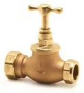
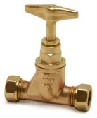
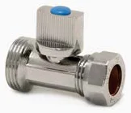
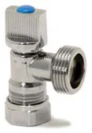
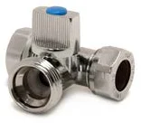
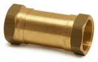
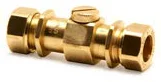
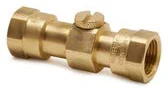
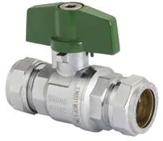
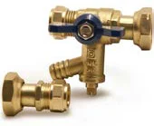

- Armatex
- Złączki skręcane
- Zawór odcinający z brązu PE × miedź PL59A
Pegler Yorkshire · Zawory Kuterlite
Zawór odcinający z brązu PE × miedź Kuterlite PL59A
Zawór odcinający z brązu PE × miedź z linii Zawory Kuterlite: 1 rozmiar (32x28mm). Zastosowanie: woda, podłączenia urządzeń.
- Rozmiary
- 1
- Końcówki
- zaciskowe Kuterlite
- Producent
- Pegler Yorkshire

Rozmiary i numery artykułów
Źródło: cennik Kuterlite, październik 2024| Rozmiar | Nr artykułu | Opak. 1 | Opak. 2 | Lista |
|---|---|---|---|---|
| 32x28mm | 504059 | 1 szt. | 2 szt. |
- Linia
- Zawory Kuterlite
- Zastosowanie
- woda, podłączenia urządzeń
- Nazwa w cenniku
- gunmetal stopvalve (BS 1010), crutch top, polyethylene x copper
Zapytaj o ofertę: Zawór odcinający z brązu PE × miedź PL59A.
Dodaj rozmiary do listy przyciskiem „Dodaj” albo od razu napisz do nas. Ceny hurtowe, dostępność i terminy przygotujemy w ciągu jednego dnia roboczego.
Inne produkty w linii
Wszystkie linie systemu
Zawór odcinającyK551 · 1 rozm.
Zawór do urządzeń, prostyK637 · 1 rozm.
Zawór do urządzeń, kątowyK638 · 1 rozm.
Zawór do urządzeń, trójnikowyK639 · 1 rozm. Zawór zwrotny pojedynczyK424 · 3 rozm.
Zawór zwrotny pojedynczyK424 · 3 rozm.
Zawór zwrotny pojedynczy z GWK426 · 6 rozm.
Zawór zwrotny podwójnyK4424 · 3 rozm.
Zawór zwrotny podwójnyK4426 · 6 rozm. Zawór kulowy odcinającyK480 · 2 rozm.
Zawór kulowy odcinającyK480 · 2 rozm. Zawór kulowy ćwierćobrotowy z dźwigniąPB300 · 3 rozm.
Zawór kulowy ćwierćobrotowy z dźwigniąPB300 · 3 rozm.
Zawór kulowy pełnoprzelotowy chromowanyPB300T · 1 rozm.
Zestaw wodomierzowyPB360WMK · 1 rozm.